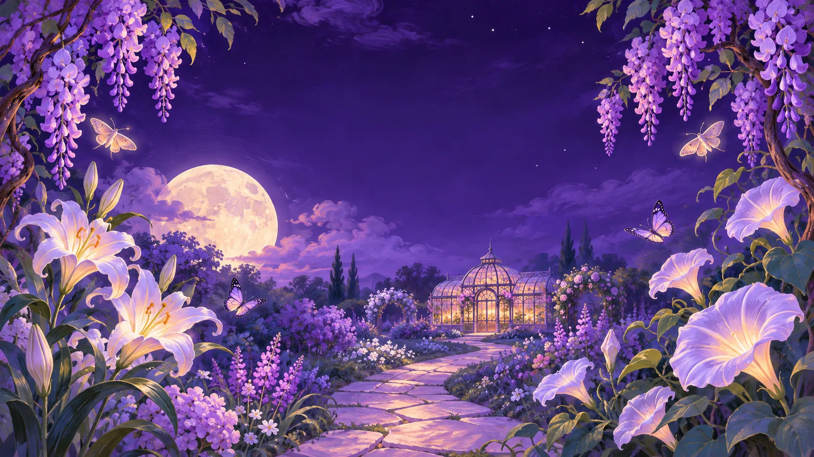
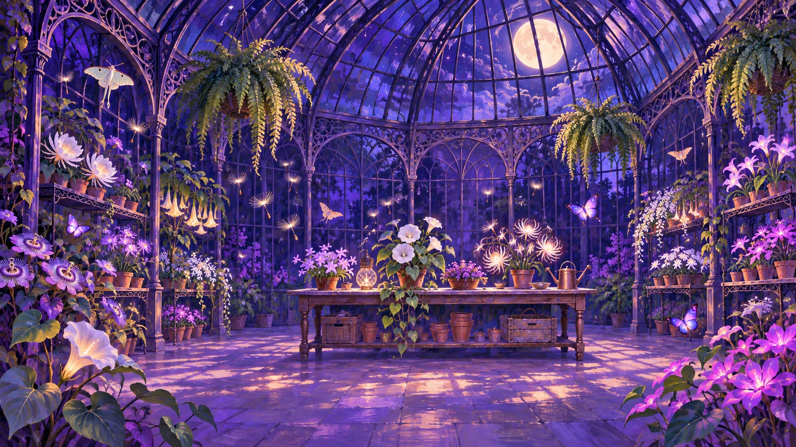
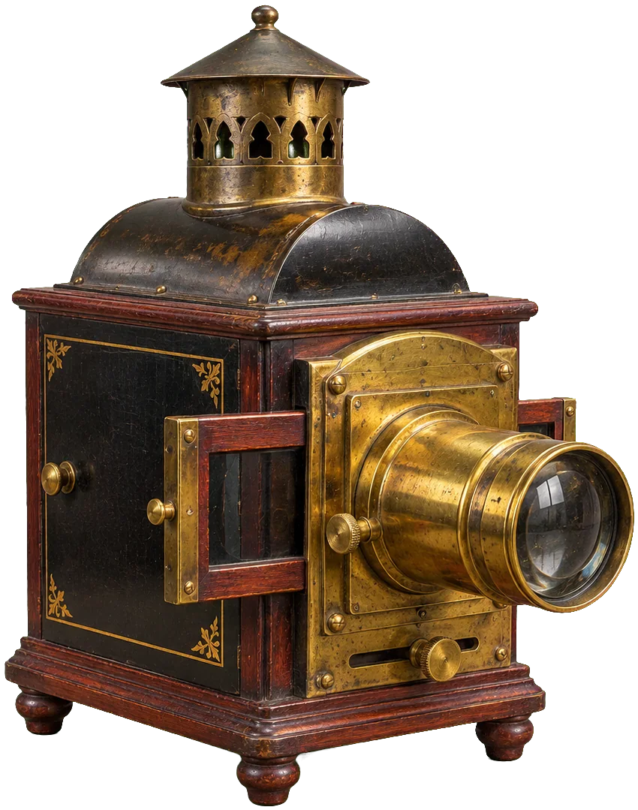
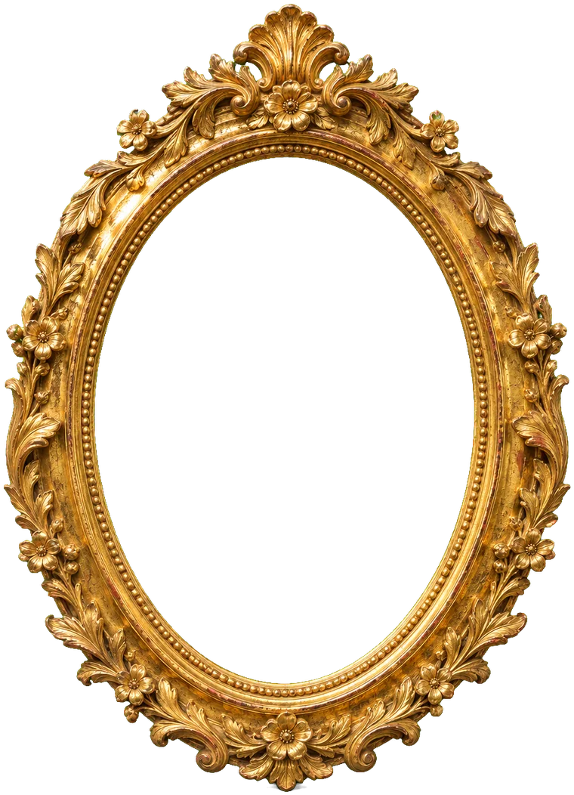
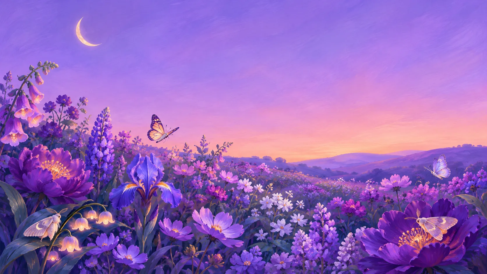

Almanac no. 01
The night garden issue
Manila, Philippines
Open to work
Lana Denise Huertas
Huertas
UI/UX and graphic designer in Manila. I design brands, posters, films and real product screens, and I build some of them in code.


Six drawers of work
pick one, or keep walkingFour years of brands, posters, films and apps, sorted the way a gardener sorts seeds. Every drawer opens a part of the garden below.

10 brands, each with its pubmats.


Drawer one
Branding and pubmats
Ten identities for student councils, chapters and conventions. Open a card to see the publicity it grew into.

Drawer two
One-off posters
pressed and pinned
Drawer three
Moving pictures
Documentaries, trailers, music videos and a song about the planets. Pick a slide and the lantern shows it.



Drawer four
Products I designed and built
Four working apps. I designed each one end to end and wrote most of the code.




Software engineering at FEU Institute of Technology, graduating July 2027.
Drawer five
About Lana
I build visual content and adaptable designs for brands that want to stand out, and I can do it for you, too.
- UI/UX design internEden Holdings Philippines, Makati. Wireframes, flows, Figma prototypes and the design system.
- Freelance graphic designer and video editorBrand assets, marketing material and edits for clients in several industries.
- Creatives committee headStudent council and ACM chapter, FEU Tech. Led two creative teams and every campaign.
- Multimedia team editorLord Jesus Fellowship Church, Bataan. Weekly video and graphics.

Let's talk
from Manila, open to workHiring for UI/UX, brand or motion work, or need publicity for your org? Write to me. I reply within two days.